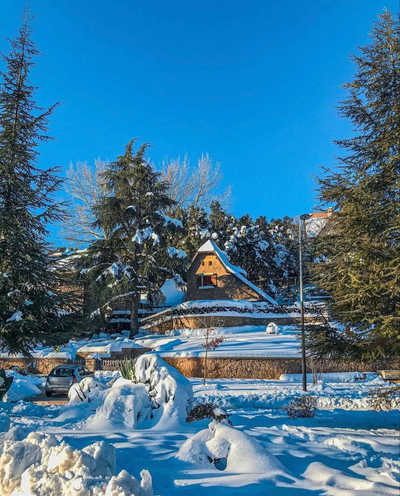
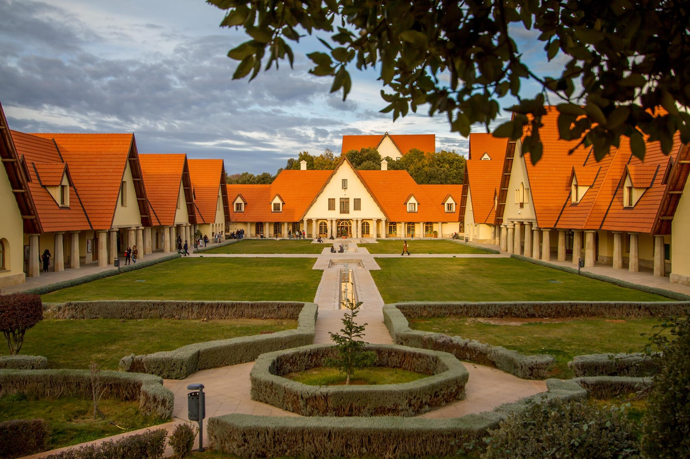
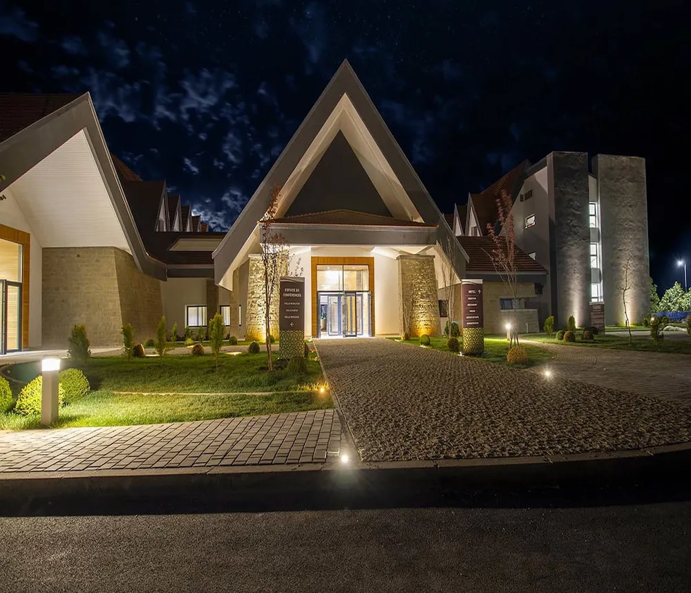

Chalets, parcs soignés et air de montagne.
Ifrane séduit par son atmosphère paisible, ses rues larges et propres, ainsi que ses toitures en tuiles rouges inspirées des villages alpins. Entourée de vastes parcs paysagers et d'espaces verts soignés, la ville offre un climat tempéré et frais qui contraste agréablement avec la chaleur des plaines environnantes.
Située en altitude au cœur du Moyen Atlas, elle sert de base idéale pour explorer la nature généreuse de la région. Selon la saison, les forêts de cèdres centenaires et les plans d'eau invitent à des promenades vivifiantes et à des sorties au grand air.

Réputé pour sa propreté, le centre-ville abrite des parcs paysagers soignés propices aux balades à pied dans un calme ressourçant.

Sculptée dans la pierre, cette célèbre statue trône au cœur de la ville et constitue un point de repère incontournable pour une photo souvenir.

La région d’Ifrane abrite de magnifiques forêts de cèdres où l'on vient respirer l'air frais des montagnes lors de randonnées paisibles.

Ce plan d'eau entouré d'arbres offre, selon la saison et la météo, de jolis paysages idéaux pour un pique-nique ou une pause contemplative.

L'architecture d'inspiration anglo-saxonne du campus s'intègre avec élégance dans les paysages montagnards du quartier environnant.

En empruntant les routes panoramiques de la région, on découvre de superbes panoramas sur les montagnes du Moyen Atlas.

De nombreux établissements situés en centre-ville vous permettent d'accéder facilement aux restaurants, parcs paysagers et commerces à pied.

Établissement chaleureux de style savoyard situé en centre-ville, parfait pour savourer un thé au coin de la cheminée.

Optez pour une maison d'hôtes traditionnelle ou un gîte rural en périphérie afin de bénéficier d'un accueil chaleureux et d'un séjour authentique.
En raison de l'altitude, les températures peuvent chuter rapidement. Pensez à toujours avoir un vêtement chaud à disposition.
Les forêts et lacs de la région sont fragiles. Veillez à préserver la propreté des lieux et à respecter les consignes locales sur les feux.
Les routes de l'Atlas peuvent s'avérer glissantes ou enneigées pendant les mois d'hiver. Renseignez-vous sur l'état du réseau routier.
Ifrane est une petite ville calme qui se prête merveilleusement bien à la marche. La plupart des centres d'intérêt sont faciles d'accès.
Pensez toujours à demander poliment l'accord des personnes que vous souhaitez photographier dans leur quotidien ou sur les marchés.
La ville peut être plus fréquentée en fin de semaine. Il est prudent de réserver vos hébergements à l'avance pour plus de tranquillité.
Laissez-vous charmer par la fraîcheur des forêts de cèdres et l'atmosphère unique du Moyen Atlas. Planifiez votre séjour.